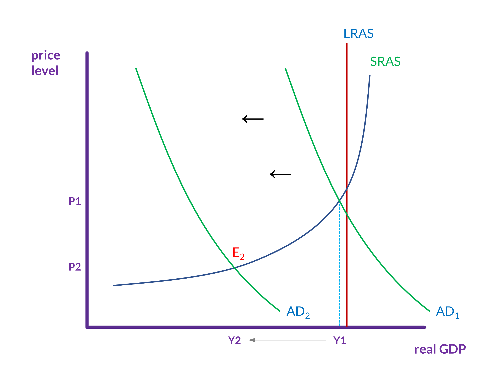
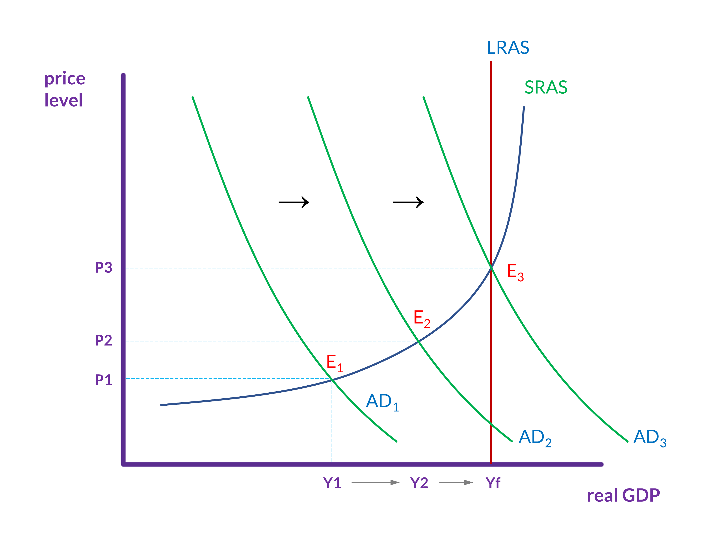
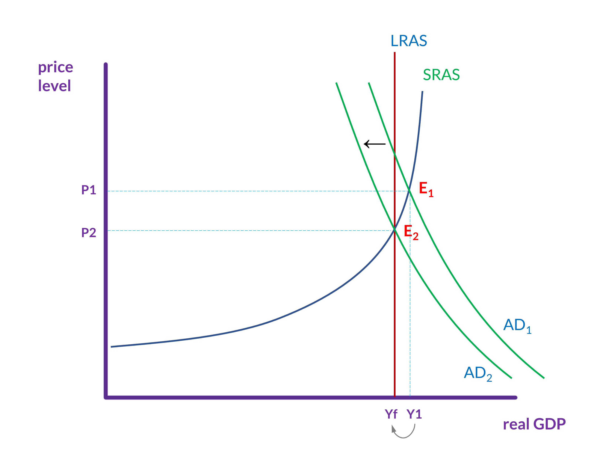

AD-AS, recessions, and fiscal policy
Recessions: A downward spiral
Suppose the stock market crashes, as it did in 1929, or the housing market collapses, as it did in 2008. If either were to happen again, a significant asset for many people (stocks or homes) would suddenly decline in value. This means that household wealth would decline, which means that consumption expenditures would also decline. This pattern could then easily develop:
-
Businesses would see that consumer spending was falling, and they would reduce investment expenditures and lay off workers.
-
This increase in unemployment would further decrease consumer spending.
-
This further decline in consumer spending would motivate businesses to further reduce investment expenditures and lay off more workers.
-
This further increase in unemployment would further decrease consumer spending.
-
Return to (3), and so the cycle keeps continuing.
One trigger can cause a cycle that drives the economy into a recession or, worse, a depression. This generally happens while the economy’s potential to employ most workers and produce a large number of goods and services remains unchanged.
During the Great Depression and the Great Recession, for instance, the physical capacity of the economy to supply goods did not much change. No flood or earthquake or other natural disaster ruined factories. No outbreak of disease decimated the ranks of workers. No key input price, like the price of oil, soared on world markets. The U.S. economy maintained the same factories, workers, and technology, and yet in both cases, GDP shrunk and unemployment soared.
Low aggregate demand
The graph in figure 1 represents a recession in the AD-AS model. Aggregate demand has fallen, and the point where AD2 and SRAS1 now intersect (E2) is well below potential GDP (i.e., long-run aggregate supply). Thus, unemployment is high. The question then, is how can aggregate demand be increased so that GDP increases and level of unemployment returns to full employment?

Sticky downward wages
As we discussed in the section on unemployment, wages are sticky downward. Recall that there are a number of possible reasons why they are, but the effect is that, when demand for labor declines, wages don’t adjust downward (as we expect that they would based on the supply and demand model). Consequently, we end up with some amount of cyclical unemployment.
But wages are only sticky downward. They aren’t stuck. They will, over time, adjust, at which point, although wages will be a little bit lower, everyone who wants a job at the prevailing wage will have one.
So, one solution to a recession is just to wait for this to happen. When it does, aggregate demand will increase, and the point where AD is equal to SRAS will move closer to potential GDP. Because wages are sticky, however, this can take a long time and high unemployment is a serious problem that seems to require a more immediate response.
Hence, to get out of recessions, most governments turn to fiscal policies: the use of government spending and tax policy to influence the path of the economy over time. The rational here is easy to see if we recall the components of aggregate demand (consumption, investment, government spending, and net exports). The government can—in a way that no individual consumer or firm can—increase or decrease aggregate demand through its own spending and by raising or lowering taxes.
Fiscal policy
Expansionary fiscal policy
Expansionary fiscal policy increases the level of aggregate demand, through either increases in government spending or reductions in tax rates.
Expansionary policy can do this by (1) increasing consumption by raising disposable income through cuts in personal income taxes or payroll taxes; or by (2) increasing investment spending by raising after-tax profits through cuts in business taxes; and (3) increasing government expenditures through increased federal government spending on final goods and services and providing federal grants to state and local governments to increase their expenditures on final goods and services.
Consider the situation represented in figure 2. Initially, the intersection of aggregate demand (AD1) and short-run aggregate supply (SRAS) is well below the level of potential GDP (i.e., LRAS). At the equilibrium (E1), the economy is in a recession and unemployment is above the level of full employment.
Expansionary fiscal policy using tax cuts or increases in government spending shifts aggregate demand to AD2 and then to AD3, at which point cyclical unemployment has declined to 0% and we have reached full employment.

Contractionary fiscal policy
Contractionary fiscal policy decreases the level of aggregate demand by decreasing consumption, decreasing investment, and decreasing government spending, either through cuts in government spending or increases in taxes.
Fiscal policy is used to reduce aggregate demand when the intersection of aggregate demand and aggregate supply is above long-run aggregate supply (i.e., potential GDP). When the equilibrium is above LRAS (E0 in figure 3), unemployment is low and even small increases in aggregate demand will cause significant inflation without much increase to output (i.e., without much increase to real GDP).
In this situation, contractionary fiscal policy, which involves federal spending cuts or tax increases, will shift aggregate demand to the left (to AD1) and move the new equilibrium (E1) to the point where aggregate demand = short-run aggregate supply = long-run aggregate supply.

The spending multiplier
The AD-AS model is useful for describing the basic effects of fiscal policy. A less intuitive aspect of fiscal policy—in particular, expansionary fiscal policy—is the multiplier effect. This is the effect that government spending has on aggregate demand as it cycles through the economy.
To see how this works, let’s say that, in an effort to increase aggregate demand, the government spends $1,000 on a project that Mary executes. This government spending constitutes a $1,000 increase to aggregate demand, and so the AD curve shifts to the right by this much. Mary does the work and is paid $1,000. She pays 20 percent of this in taxes ($200) and spends the rest ($800). Mary’s spending is an $800 increase to aggregate demand, and so the AD curve shifts to the right by this much again.
The people who receive the $800 pay 20 percent in taxes ($160) and spend the rest ($640). The people who receive the $640 do the same, and on it goes. Assuming that no one will be able to spend a fraction of 1¢, this can’t go on forever. But it takes many rounds of people paying and being paid to get to reach the end. When it does end, the government, Mary and everyone else has spent almost $5,000. Moreover, $1,000 will have been paid in taxes, and so the government will recoup its initial expenditure.
If we assume that this money is spent on domestically produced goods and services, then this is a $5,000 increase to aggregate demand. That is, the aggregate demand curve shifts to the right by this much.(1)
- If we, theoretically, consider being able to spend ever smaller fractions of 1¢, then this process will go on forever and move ever closer to the government receiving the full $1,000 back in taxes and total expenditures reaching $5,000. In the calculations that we will introduce shortly, we will presume that we are able to reach those points.
| expenditure ($) | income ($) | taxes ($) | after tax income ($) | |
|---|---|---|---|---|
| The government spends & Mary receives: | 1,000.00 | 1,000.00 | 200.00 | 800.00 |
| Mary spends & other people (group 2) receive: | 800.00 | 800.00 | 160.00 | 640.00 |
| Group 2 spends & group 3 receives: | 640.00 | 640.00 | 128.00 | 512.00 |
| Group 3 spends & group 4 receives: | 512.00 | 512.00 | 102.40 | 409.60 |
| Group 4 spends & group 5 receives: | 409.60 | 409.60 | 81.92 | 327.68 |
| Group 5 spends & group 6 receives: | 327.68 | 327.68 | 65.54 | 262.14 |
| Group 6 spends & group 7 receives: | 262.14 | 262.14 | 52.43 | 209.72 |
| Group 7 spends & group 8 receives: | 209.72 | 209.72 | 41.94 | 167.77 |
| Group 8 spends & group 9 receives: | 167.77 | 167.77 | 33.55 | 134.22 |
| Group 9 spends & group 10 receives: | 134.22 | 134.22 | 26.84 | 107.37 |
| totals after 52 rounds: | 4,999.96 | 999.99 |
The calculation that produces the figures in the table is relatively easy with a spreadsheet, but there is also a formula. If we assume that all of the income that comes from the government’s expenditure goes either to taxes or to spending on goods and services, then we use this formula, where t is the tax rate:
So, our example yields this:
The multiplier, 5, means that, after many rounds of spending cycling through the economy, aggregate demand has increased by five times the government’s initial expenditure of $1,000.
The spending multiplier with savings
If instead of spending all of the after-tax income, Mary and everyone else in our example saves 10 percent, then the government will only collect a little more than $714 in taxes, and Mary and everyone else will only spend about $2,571. This will still, however, create a $3,571 increase in aggregate demand. (That is, government’s $1,000 expenditure plus everyone else’s expenditures.)
For the calculation with savings, we will introduce the marginal propensity to save (MPS) and the marginal propensity to consume (MPC). These are the percentages of each additional dollar that a person or household will save or consume. Mary might act differently with the first $30,000 or $40,000 that she earns, but, right here, we just care about this last $1,000 that she has earned.
Let MPC = 1 – MPS. This is the formula:
Since Mary and everyone else is saving 10 percent of this income, MPS = .10 and so MPC = .90. If the tax rate (t) is .20, then we calculate the multiplier this way:
This calculation tells us that the government’s $1,000 expenditure increased aggregate demand by $3,571 (i.e., $1,000 × 3.571 = $3,571).
Increasing aggregate demand
The moral here is that expansionary fiscal policy can be more effective than it might initially seem to be because every $1 that the government spends increases aggregate demand several times over. Plus, through taxes, the government recoups some or all of its spending. (How much the government recoups depends on how much people save.)
There are some caveats, however. First, wealthier people spend much less of their incomes (and save more), and so any government expenditures that go to them will have a lower multiplier than expenditures that go to less wealthy individuals, who spend all or almost all of their after-tax incomes.
Second, increasing aggregate demand (and GDP) requires spending on new goods or services produced in the U.S. So, just as paying taxes and saving lowers the multiplier, spending on used goods or imported goods will as well.
Finally, there is the question of how fast this multiplying occurs. Obviously, it won’t happen instantaneously. To get the full multiplier effect, the money has to be income for and spent by many individuals. If we are trying to move the economy out of a recession or lower unemployment, it won’t help as much if the multiplying happens too slowly.